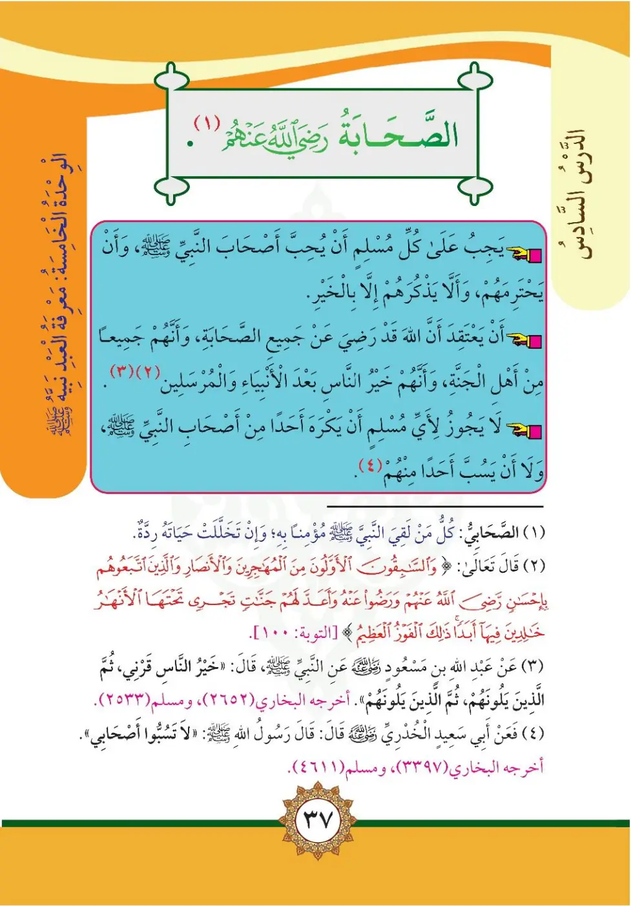

Stage 2·المرحلة الثانية⭐ Unit 5
الصَّحَابَةُ رَضِيَ اللهُ عَنْهُمْ The Companions, May Allah Be Pleased with Them
From the Textbookp. 38

يَجِبُ عَلَى كُلِّ مُسْلِمٍ أَنْ يُحِبَّ أَصْحَابَ النَّبِيِّ ﷺ وَأَنْ يَحْتَرِمَهُمْ وَأَلَّا يَذْكُرَهُمْ إِلَّا بِالْخَيْرِ.
Yajibu ‘ala kulli muslimin an yuhibba as-haba an-nabiyyi ﷺ wa an yuhtaramuhum.
Every Muslim must love the Companions of the Prophet ﷺ, respect them, and never mention them except in good terms.
நபி ﷺ அவர்களின் தோழர்களை நேசிப்பது, மதிப்பது, நல்லதையே அவர்கள் குறித்துக் கூறுவது — ஒவ்வொரு முஸ்லிம் மீதும் கடமை.
وَيَجِبُ أَنْ يَعْتَقِدَ أَنَّ اللَّهَ قَدْ رَضِيَ عَنْ جَمِيعِ الصَّحَابَةِ، وَأَنَّهُمْ جَمِيعًا مِنْ أَهْلِ الْجَنَّةِ، وَأَنَّهُمْ خَيْرُ النَّاسِ بَعْدَ الْأَنْبِيَاءِ وَالْمُرْسَلِينَ. وَلَا يَجُوزُ لِأَيِّ مُسْلِمٍ أَنْ يَكْرَهَ أَحَدًا مِنْ أَصْحَابِ النَّبِيِّ ﷺ أَوْ يَسْتَخِفَّ بِأَحَدٍ مِنْهُمْ.
Wa yajibu an yu‘tiqida anna Allaha radiya ‘an jami‘i as-sahabati, wa annahum jami‘an min ahli al-jannah.
We must believe that Allah is pleased with all the Companions, that they are all among the people of Paradise, and that they are the best of people after the prophets and messengers.
No Muslim may hate any Companion of the Prophet ﷺ or belittle any of them.
எல்லாத் தோழர்கள் மீதும் அல்லாஹ் திருப்தி அடைந்தான்; அவர்கள் அனைவரும் சுவனவாசிகள்; இறைத்தூதர்களுக்குப் பிறகு அவர்களே மிகச் சிறந்தவர்கள் — இவ்வாறு நம்புவது கடமை.
தோழர்களில் எவரையும் வெறுப்பதோ குறை கூறுவதோ ஹராம்.
﴿وَالسَّابِقُونَ الْأَوَّلُونَ مِنَ الْمُهَاجِرِينَ وَالْأَنْصَارِ وَالَّذِينَ اتَّبَعُوهُم بِإِحْسَانٍ رَّضِيَ اللَّهُ عَنْهُمْ وَرَضُوا عَنْهُ وَأَعَدَّ لَهُمْ جَنَّاتٍ تَجْرِي تَحْتَهَا الْأَنْهَارُ خَالِدِينَ فِيهَا أَبَدًا﴾
Was-sabiquna al-awwaluna minal-muhajirina wal-ansari walladhina ittaba‘uhum bi-ihsanin radiya Allahu ‘anhum.
The early vanguard of the emigrants and the helpers [of Madinah] and those who followed them in good deeds: God is pleased with them and they are pleased with Him. He has prepared gardens for them through which rivers flow, where they will remain forever.
முஜாஹிர்களிலும் அன்ஸார்களிலும் முதன்மையானவர்கள், மேலும் நல்ல முறையில் அவர்களைப் பின்பற்றியவர்கள் — அல்லாஹ் அவர்களைப் பொறுத்தவரை திருப்தி அடைந்தான்... அவர்களுக்காக ஏற்பாடு செய்யப்பட்ட சுவனங்களின் கீழ் ஆறுகள் ஓடிக்கொண்டிருக்கும்...
عَنِ ابْنِ مَسْعُودٍ رَضِيَ اللَّهُ عَنْهُ قَالَ: قَالَ النَّبِيُّ ﷺ: «خَيْرُ النَّاسِ قَرْنِي، ثُمَّ الَّذِينَ يَلُونَهُمْ، ثُمَّ الَّذِينَ يَلُونَهُمْ». أَخْرَجَهُ الْبُخَارِيُّ (٢٦٥٢) وَمُسْلِمٌ (٢٥٣٣). وَعَنْ أَبِي سَعِيدٍ الْخُدْرِيِّ رَضِيَ اللَّهُ عَنْهُ قَالَ: قَالَ رَسُولُ اللَّهِ ﷺ: «لَا تَسُبُّوا أَصْحَابِي». أَخْرَجَهُ الْبُخَارِيُّ (٣٣٩٧) وَمُسْلِمٌ (٤٦١١).
«Khayru an-nasi qarni, thumma alladhina yalunahum, thumma alladhina yalunahum» ... «La tasabbu as-habi».
Ibn Mas'ud reported that the Prophet ﷺ said: "The best people are my generation, then those who come after them, then those who come after them." Narrated by al-Bukhari (2652) and Muslim (2533).
Abu Sa'id al-Khudri reported that Allah's Messenger ﷺ said: "Do not insult my Companions." Narrated by al-Bukhari (3397) and Muslim (4611).
"என் தலைமுறையினரே சிறந்தவர்கள்; பின் அவர்களைத் தொடர்ந்தவர்கள்; பின் அவர்களைத் தொடர்ந்தவர்கள்." (புகாரி 2652; முஸ்லிம் 2533)
"என் தோழர்களை இழிவாகக் கூறாதீர்கள்." (புகாரி 3397; முஸ்லிம் 4611)